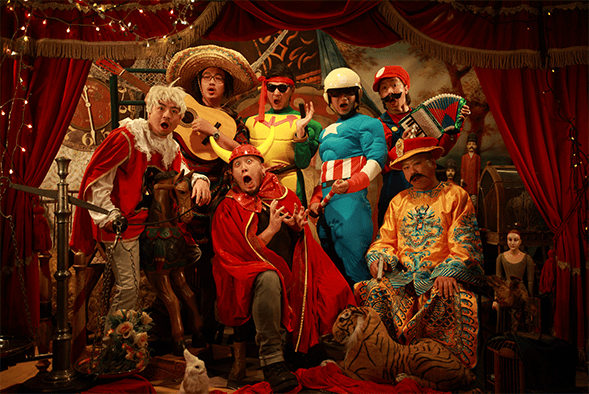
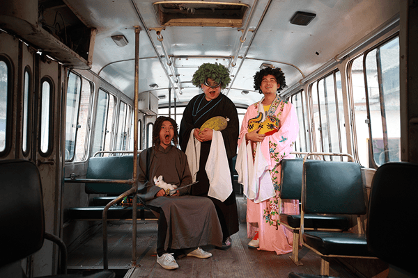

马良被国际媒体誉为当代舞台装置风格摄影的代表人物，在国内也受到特别的关注。因其个人风格明确，在艺术上有广泛的支持者 和追随者。入选《周末画报》中国力量百人榜、《东方早报》评为“文化中国年度人物”、日本《MAC》杂志评为“当代最重要的50位国际视觉艺术家”、欧美主流媒体 票选最具成长性的中国艺术家，被国内媒体评为中国艺术青年中最具号召力的精神领袖。
1972年，生于上海，12岁起进入上海华山美术学校初中部学习专业美术。
1995年，毕业于上海大学美术学院设计专业，接受专业美术教育11年。
1995-2003年期间从事广告影片的美术指导和导演工作，先后获得过2次中国广告节金奖，以及各种其他相关奖励数十次以上。
2004年，回到热爱的艺术创作领域，开始从事以摄影为媒介的图片艺术创作，并兼工绘画和装置艺术创作。目前生活和工作在上海。
2012年，创作艺术项目《我的移动照相馆》，用时十个多月，在全国35个城市搭建临时照相馆，免费为1600多人拍照，反应强烈。